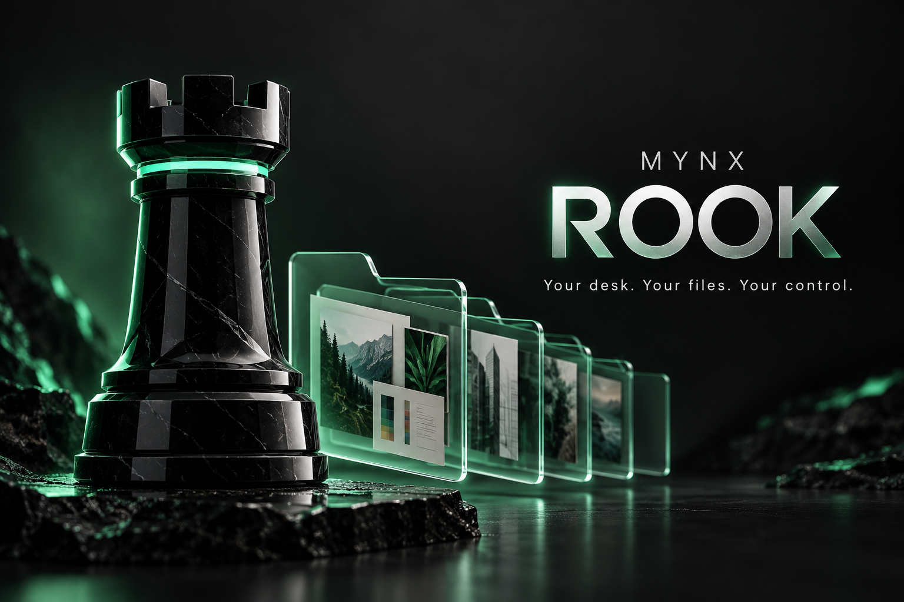

JOSHUA HALE / MYNX INTELLIGENCE
Clear the view.
Keep the work.
A local desktop keeper for an organized workspace, intact projects and a clear record of what happened.
Try it here ↓Windows edition
FREE BROWSER DEMO / REAL METADATA GROUPING
A calmer view of your files.
Try the labelled sample or choose a folder. Your browser shares file names, relative paths and sizes with this page only. This demo does not read contents, upload files, move originals, or change your desktop. The folder picker may include nested files; top-level references are grouped here. Empty folders are not supplied by the browser.
Nothing selected. Nothing changed.
| Name | Category | Status |
|---|
LOCAL WINDOWS EDITION / RELEASE PREPARATION
Keep the work on your computer.
A customer package is being prepared. Paid checkout is unavailable right now; there is no purchase or download button pretending otherwise.
Ask about the Windows release ↗Windows x64 runtime; Windows ARM64 needs x64 emulation. Customer setup verification is in progress.Part of something bigger.
Rook and K-AI-OS belong to Joshua’s wider ecosystem of local operators, production tools, apps and infrastructure. Meet Nova, then explore what fits your work.
Meet Nova ↗ · The whole ecosystem ↗